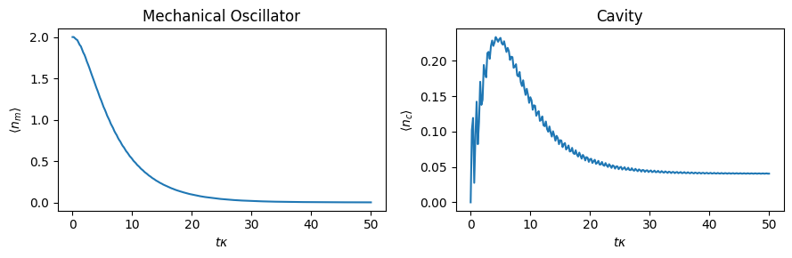
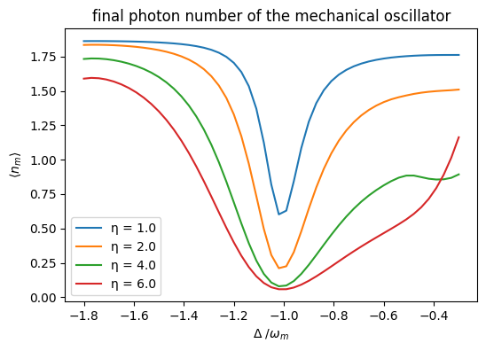

This notebook can be found on github
Optomechanical Cavity
Cavity optomechanics describes quantum interactions between light and mechanical objects. The simplest system is modeled as an optical resonator, where one mirror is suspended by a spring. In this model the mechanical harmonic oscillation couples with the optical cavity intensity.
Such a system is described by the Hamiltonian (for simplicity $\hbar = 1$ is chosen):
\[H = -\Delta a^\dagger a + \omega_m b^\dagger b - g (b^\dagger + b)a^\dagger a + \eta (a + a^\dagger)\]
where the constants are
- $\omega_m$ is the frequency of the mechanical oscillator,
- $\Delta = \omega_L - \omega_c$ is the frequency by which the pump laser is detuned from the cavity frequency,
- $g$ is the coupling constant of the cavity with the oscillator and
- $\eta$ is the pump strength.
In such a system we can cool the mechanical oscillator by red-shifting the laser by $\omega_m$ relative to the cavity frequency. To simulate this behavior the needed libraries have to be imported first.
using QuantumOpticsusing PyPlotThen all the needed constants are defined
# Parametersω_mech = 10.Δ = -ω_mech# Constantsg = 1.η = 2.κ = 1.Here $\kappa$ is the photon decay rate of the cavity.
It is useful to write the system basis as pairs of coupled Fockstates $| n\rangle \otimes |m\rangle$, where the first is the state of the cavity and the second is the state of the oscillator. For this we define the basis for each and also define their ladder operators.
# Basisb_cav = FockBasis(4)b_mech = FockBasis(10)# Operators Cavitya = destroy(b_cav) ⊗ one(b_mech)at = create(b_cav) ⊗ one(b_mech)# Operators Oscillatorb = one(b_cav) ⊗ destroy(b_mech)bt = one(b_cav) ⊗ create(b_mech)Using the above operators and parameters the Hamilton operator for the system can be defined as follows:
# Hamilton operatorH_cav = -Δ*at*a + η*(a + at)H_mech = ω_mech*bt*bH_int = -g*(bt+b)*at*aH = H_cav + H_mech + H_intSince we also want to model photon decay in the cavity we can define the needed jump operator and associated rates. We also define the initial state to be $|\psi_0\rangle = |0\rangle \otimes | 2\rangle$
J = [a]rates = [κ]ψ0 = fockstate(b_cav,0) ⊗ fockstate(b_mech,2)Given all the above the system is fully specified, and the master equation can be solved.
T = [0:0.2:50;]tout, ρt = timeevolution.master(T,ψ0,H,J;rates=rates)To see the cooling behavior mentioned above we need to look at the expected phonon number of the oscillator over time. This can be easily plotted using the following.
figure(figsize=(9, 3))subplot(1, 2, 1)title("Mechanical Oscillator")plot(T, real(expect(bt*b, ρt)))xlabel(L"t \kappa")ylabel(L"\langle n_m \rangle")subplot(1, 2, 2)title("Cavity")plot(T, real(expect(at*a, ρt)))xlabel(L"t \kappa")ylabel(L"\langle n_{c} \rangle")tight_layout()
As expected optomechanical cooling yields an exponential decay of the expected phonon number in the mechanical oscillator. The small oscillations of the cavity curve exhibit the same period as the mechanical oscillator.
To calculate the final expected phonon and photon number directly, we can look at the steady state of the system.
ρ_end = steadystate.eigenvector(H,sqrt.(rates).*J;which=:SM)println("⟨n_m⟩ = ", real(expect(bt*b,ρ_end)))println("⟨n_c⟩ = ", real(expect(at*a,ρ_end)))⟨n_m⟩ = 0.0008899499846858401
⟨n_c⟩ = 0.04057123454479777Remark: If H and J are sparse, then the function used to diagonalize the Lindblad term is Julia's eigs. While this algorithm is efficient, it can produce misleading results or even fail depending on the options that are set. The steadystate.eigenvector function tries to ensure that only fully correct results are produced, throwing an error otherwise. This is why above (and in the following) we set the eigs keyword argument which=:SM. The values of which and other kwargs (such as nev) may have to be changed depending on the given problem. For all options, see Julia's documentation.
System coupled to a Heat Bath
The calculation up until now assumes the oscillator is thermally isolated from the environment. A more realistic setup can be simulated by coupling the mechanical oscillator to a heat bath. During the cooling process heat will therefore also flow from the heat bath to the system.
A harmonic oscillator coupled to a bath can be described using the following jump operators $J$ and corresponding rates $\gamma$:
$J_{out} = b\quad\gamma_{out} = \frac{c}{2}(\bar{n}+1)$
$J_{in} = b^\dagger\quad\gamma_{in} = \frac{c}{2} \bar{n}$
where $\bar{n}$ is the mean phonon number of the heat bath and $c$ the mechanical damping rate.
c = 0.03 # mechanical damping constantn = 2 # average thermal phonon number of bath.J = [a, b, bt]rates = [κ, c/2*(n+1), c/2*n]tout, ρt_bath = timeevolution.master(T, ψ0, H, J; rates=rates)Using the calculated time evolution we can compare the expected phonon number over time of the thermally coupled system with the isolated one.
figure(figsize=(6,4))plot(T, real(expect(bt*b, ρt_bath)), label="Heat Bath")plot(T, real(expect(bt*b, ρt)),"--", label="Isolated")xlabel(L"t \kappa")ylabel(L"\langle n_m \rangle")title("time evolution of the mechanical phonon number ")legend()
As expected the system, interacting with the heat bath converges to a higher phonon number. The resulting value can again be calculated using the functions from steadystate.
ρ_end = steadystate.eigenvector(H, sqrt.(rates).*J;which=:SM)println("⟨n_m⟩ = ", real(expect(bt*b,ρ_end)))println("⟨n_c⟩ = ", real(expect(at*a,ρ_end)))⟨n_m⟩ = 0.20936525871672348
⟨n_c⟩ = 0.06713152118734816Earlier we made the choice to cool using the laser red shifted by $\omega_m$. This value was chosen because the strongest cooling can be achieved here. This resonance can be visualized by finding the resulting phonon number, while cooling with different frequency shifts. The result below shows an obvious resonance around $\omega_m$. It can also be seen that the cooling depends on the pump strength $\eta$.
figure(figsize=(6, 4))detune = [-18:0.3:-3;]for η1 = [1., 2., 4., 6.] n_end = [] for det = detune H_det = -det*at*a + H_mech + H_int + η1*(a + at) ρ = steadystate.eigenvector(H_det, sqrt.(rates).*J;which=:SM) push!(n_end, real(expect(bt*b, ρ))) end plot(detune./ω_mech, n_end, label="η = $η1")endxlabel(L"\Delta\ / \omega_m")ylabel(L"\langle n_m \rangle")title("final photon number of the mechanical oscillator")legend()